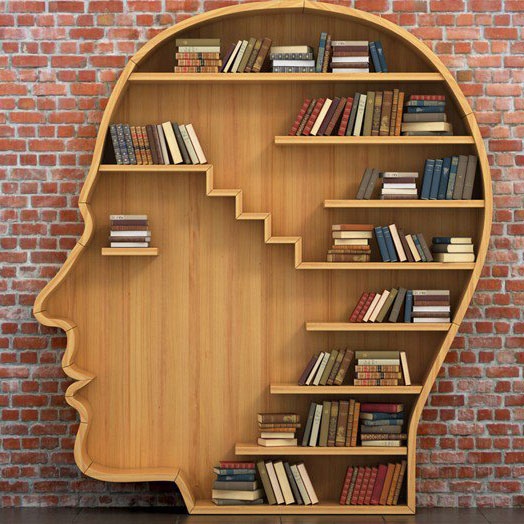

Про Книги
10 плюсов чтения, или почему нужно читать каждый день
Когда вы в последний раз читали книгу или серьезную статью в журнале? Не ограничены ли ваши ежедневные читательские
привычки твитами, обновлениями в Facebook или инструкцией на коробке с овсянкой?
Если вы один из многих, у кого нет регулярной привычки читать, возможно, вы упускаете кое-что.
У чтения есть много плюсов, ниже — десять из них.
1) ☑ Стимуляция мозга
Исследования показывают, что стимуляция мозга может замедлить (или предотвратить) болезнь Альцгеймера и деменцию. Мозговая активность не дает главному органу потерять мощность.
Как любой мышце тела, мозгу нужны упражнения, чтобы оставаться сильным и здоровым, поэтому фраза «используй или потеряешь» применима и к мозговым функциям. Пазлы и игры, например, шахматы, также полезны для когнитивной стимуляции мозга
2) ☑ Уменьшение стресса
Независимо от того, сколько стресса вам приносит работа, личная жизнь или другие проблемы, с которыми вы сталкиваетесь каждый день, все это исчезает, когда вы погружаетесь в историю. Качественные романы отнесут вас в другие миры, в то время как занятная статья увлечет и удержит в настоящем моменте. Напряжение уйдет, и вы расслабитесь.
3) ☑ Знания
Все, что вы читаете, — источники новой информации. Никогда не знаешь, когда какие сведения пригодятся. Чем больше знаний, тем больше шансов, что вы справитесь с любой задачей, которую подкинет жизнь.
Вот еще немного пищи для размышления: помните, что в один ужасный день можно потерять все — работу, имущество, деньги, даже здоровье, но знания у вас никто не отнимет.
4) ☑ Расширение словарного запаса
Чем больше вы читаете, тем больше слов пополняют ваш ежедневный лексикон.
Хорошо поставленная речь не помешает в работе, а умение уверенно говорить с вышестоящими коллегами поднимет самооценку. Это поможет карьере, ведь начитанные, эрудированные люди с развитой речью быстрее продвигаются по службе, в отличие от тех, у кого меньше словарный запас и уже кругозор.
Чтение книг также жизненно важно для изучения новых языков, потому что иностранцы могут изучать новые слова в контексте историй, улучшить грамотность и беглость речи.
5) ☑ Развитие памяти
Когда вы читаете книгу, приходится запоминать персонажей, их характеры, цели, историю и многие нюансы, а также хорошо ориентироваться в сюжете, темах, которые переплетаются друг с другом. Это сложный процесс, но мозг — удивительный орган, который с легкостью это все запоминает.
Поразительно, но каждое запоминание создает новые нейронные пути и укрепляет существующие. Это помогает развить оперативную память, а также стабилизировать настроение. Здорово, да?
6) ☑ Аналитические навыки
Разгадывали ли вы главную загадку в романе до его окончания? Если да, то значит, что вы применили критическое и аналитическое мышление, чтобы сопоставить все детали и понять интригу.
Такое же умение анализировать детали пригождается, когда мы критически оцениваем роман: хорошо ли написано произведение, раскрыты ли характеры персонажей, насколько удачно сложена сюжетная линия и так далее.
Если у вас будет возможность обсудить книгу с кем-то еще, вы сможете четко сформулировать свое мнение, потому что вы уделили время анализу деталей
7) ☑ Тренировка фокуса и внимания
В нашем сумасшедшем виртуальном мире внимания требуют миллион вещей, поэтому мы каждый день практикуем многозадачность.
В течение 5 минут человек может разрываться между выполнением рабочей задачи, проверкой электронной почты, перепиской с парочкой людей, чтением твиттов, мониторингом телефона и общением с коллегами. Этот тип аддиктивного поведения способствует повышению уровня стресса и снижению производительности.
Когда вы читаете книгу, все внимание сфокусировано на истории — остальной мир перестает существовать, и вы можете погрузиться в каждый момент.
Старайтесь читать 15-20 минут до работы (например, утром, если добираетесь до офиса на общественном транспорте), и вы удивитесь, насколько сфокусированнее вы будете на рабочем месте.
8) ☑ Писательские навыки
Этот пункт идет рука об руку с расширением словарного запаса. Наблюдение за стилями других авторов не может не влиять на ваш собственный стиль.
Этот процесс схож с тем, как музыканты влияют друг на друга, как художники используют техники творивших ранее мастеров. Писатели тоже совершенствуют свой навык, читая произведения других авторов.
9) ☑ Умиротворение
Помимо расслабления, к которому ведет чтение хорошей книги, вы также можете получить умиротворение. Чтение душевных текстов понижает
давление и несет чувство спокойствия, в то же время книги могут помочь людям, которым свойственно расстройство настроения и легкие
психические заболевания.
10) ☑ Бесплатное обучение
Хотя многие любят покупать книги, чтение может быть бесплатным.
Снизить затраты на чтение помогут библиотеки. Там вы найдете книги на любой вкус, кроме того, они периодически пополняют книжные коллекции, поэтому у вас никогда не закончится материал для чтения.
Если у вас нет библиотеки под боком или вы не можете добраться до ближайшей, то вам в помощь интернет. Многие книги представлены в форматах PDF и ePub, поэтому их можно читать с ридера, планшета или компьютера. Также есть много сайтов с бесплатными книгами, поэтому отправляйтесь почитать что-нибудь новенькое прямо сейчас!
Существует много жанров литературы, и каждый найдет что-то для себя. Не важно, что вам нравится — классика, стихи, модные журналы, биографии, религиозные тексты, подростковые книги, самоучители, уличная литература или романтические новеллы. Вы обязательно найдете то, что захватит ваше воображение!